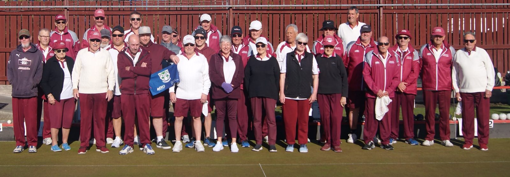
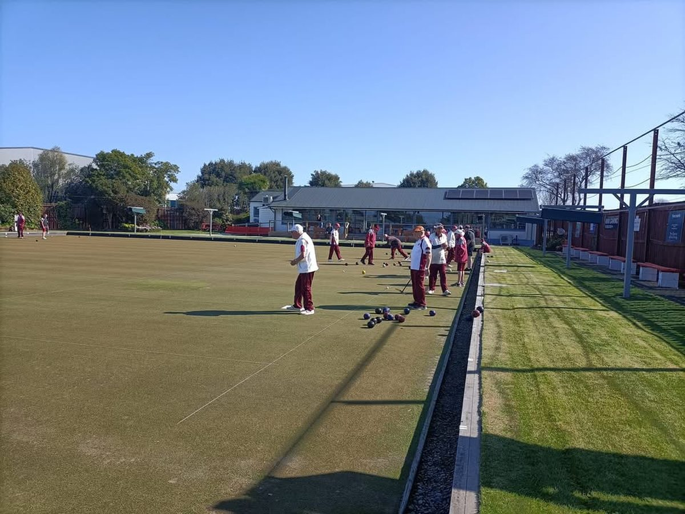
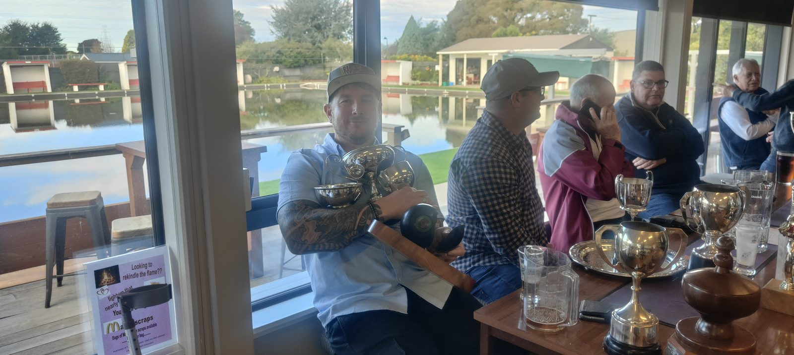

Bowls Hornby welcomes new players at any time of the season — no experience needed, just come along and have a go.
New players are always welcome — at any time of the season! To come and have a go and see what bowls is like, phone our coach to arrange a chat or a catch-up: Dave Vincent, 021 070 1862.
Bowls Hornby has two full-size greens on the Hornby Domain, a few easy steps from parking and the clubhouse. Whether you're chasing competition bowls or just want a relaxed roll with friends on a Saturday afternoon, there's a place for you here.
From club championships to a quiet drink after a roll-up, there's a warm community waiting at Bowls Hornby. Here's a glimpse of the club in action.



[Draft note — for reviewers] Sample club photos, included in the draft for review only. Not for public display until the committee confirms the people shown are happy for them to appear on the live site.
You don't need equipment, experience, or a club uniform to try your first end. Give Dave a call, and he'll set you up with a bowl and a friendly face to show you the ropes.